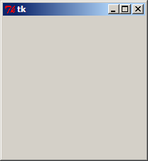
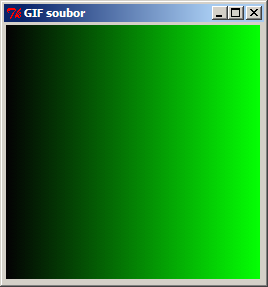
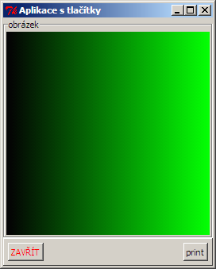

GUI – Tkinter
by Jiří Znamenáček
Úvod
Vzhledem k době svého vzniku obsahuje sice většina pythoních distribucí vestavěný nástroj pro tvorbu grafických uživatelských rozhraní (GUI), ovšem tímto nástrojem je nezaslouženou negativitou provázený Tkinter aneb pythoní nadstavba nad nástrojem Tk.
Podpora Tkinter'u externími nástroji není zrovna oslnivá, ale pokud chcete distribuovat pythoní programy s GUI bez minima externích závislostí, je to jediná zaručená volba. (Nehledě na to, že všechny ostatní nástroje mají svůj díl problémů s fungováním na všech platformách.)
PS: Kontrola instalace
Pod Windows se při běžné instalaci Python'u nainstaluje i podpora pro tkinter, ale na ostatních platformách je často v samostatném balíčku. Pro ověření korektní instalace stačí zavolat:
python -m tkinter
Při funkční instalaci se tím otevře minimalistické testovací GUI.
Vytvoření okna aplikace

Založení okna aplikace je standardní – vytvoříme příslušný objekt (potomek Tk) a spustíme hlavní zpracovávací smyčku GUI-aplikací (tzv. event loop). Tato smyčka stále běží až do ukončení aplikace (ať už korektním uzavřením nebo havárií) a stará se o zpracování událostí, ke kterým v aplikaci dojde.
Vlastnosti okna aplikace
Založit okno GUI-aplikace je tedy velmi jednoduché, a přitom toto okno už umí prakticky vše, co po něm běžně potřebujeme. Má ovšem výchozí název („tk“) a rozměr (čtverec o hraně ~200 pixelů). Toto vše – i mnoho dalšího – se dá pomocí dalších metod (objektu okna) změnit:
-
title("NÁZEV OKNA")– nastaví název okna aplikace na uvedený řetězec; -
geometry("400x200+300+100")– nastaví rozměry okna na 400x200 pixelů a umístí ho levým horním rohem na souřadnice [300, 100] (počítáno od levého horního rohu, osa x běží vpravo, osa y dolů); -
resizable(width=False, height=True)– oknu bude možné měnit rozměr pouze ve vertikálním směru; -
attributes('-alpha', 0.7)– nastaví okno na mírně průhledné; -
attributes('-topmost', True)– způsobí, že okno se bude držet nad všemi ostatními okny i při ztrátě fokusu; -
iconify()&deiconify()– (z/od)minimalizuje okno na/z pracovní lištu/y; -
withdraw()– úplně odstraní okno mimo obrazovku (deiconify() ho dokáže vrátit); - …
Manažery vzhledu
Aby okno také něco dělalo, je třeba naplnit ho nějakými výkonnovými komponentami, jako jsou například tlačítka, menu, texty či obrázky. A tyto komponenty je třeba v rámci okna nějak uspořádat. Tkinter k tomuto účelu poskytuje tři různé (neviditelné) objekty (tzv. layout managers):
- pack – skládá komponenty za sebou do vertikálních a horizontálních boxů, které poté připojuje do okna na vyhovující pozici (nepřekvapivě asi nejvhodnější pro všechna jednodušší rozvržení obsahu okna);
- grid – pozicuje komponenty v ploše do „oken mříže“ (typickým příkladem budiž kalkulačka :-);
- place – pozicuje komponenty podle absolutních souřadnic (nepřekvapivě je těžko přenositelný, jeho použití je tudíž velmi speciální).
Příklad – obrázek v okně
Bez podrobností si ukažme rovnou, jak v okně aplikace zobrazit obrázek ve formátu GIF:

PS: Pokud se nebudete hrabat v geometry(), vlastní okno aplikace se v rámci možností svou velikostí přizpůsobí obsahu.
Poznámka – vlastnosti objektů
Všimněte si, že zařazení kanvasu do hierarchie elementů a jeho zobrazení zařídilo zavolání metody pack() přímo na něm. Ve skutečnosti je tato metoda definována na úplně samostatné třídě a všechny jednotlivé komponenty GUI ji díky pythoní vícenásobné dědičnosti sdílejí.
Takovýchto tříd, ze kterých komponenty GUI dědí, je více. Výsledkem je, že volání všech potřebných věcí je díky této delegaci (volání metody z komponenty je přesměrováno na příslušný objekt) k dispozici pohodlně na každé komponentě.
Budete-li se chtít podívat, co všechno daný objekt umí, nejlepší je nápověda na příkazové řádce (případně rovnou stránky dokumentace pro Tk…). Někdy však postačí nechat si pro příslušný libovolný objekt GUI vypsat jeho TkObjekt.config() a/nebo TkObjekt.keys().
Příklad – složitější aplikace (vzhled)

Příklad – složitější aplikace (kód)
Složitější GUI-aplikaci je zvykem (i z praktických důvodů) zavést spíše jako samostatnou třídu:
Vlastnosti GUI-komponent
Stejně jako hlavní okno GUI-aplikace i jeho jednotlivé komponenty mají spoustu vlastností. Velká část z nich je sdílená (například všechny metody pro práci s rozložením), ale pochopitelně má každá komponenta i spoustu vlastností vlastních. Sdílené metody zahrnují například:
-
bell()– zvoneček ^_~ -
focus()– pokusí se (skrz window managera) předat fokus na uvedenou komponentu; -
lift()alower()– pozvedne/poníží pořadí objektu v sekvenci komponent; -
update()– zpracování všech čekajících událostí; -
quit()– zavření aplikace; - …
focus(), tak lift() a lower(), ale jsou to jeho vlastní metody.
Další „widžety“ a jejich styly
Jelikož nemám šanci nahradit oficiální i neoficiální materiály na tvorbu GUI pomocí (nejen) tkinter'u, následuje už jen zběžný přehled některých dostupných komponent, abyste si mohli udělat lepší představu, co je v tkinter'u možné:
- Frame, LabelFrame, Panedwindow, Notebook – vizuální sgrupování;
- formulářové prvky Lable, Button, Checkbutton, Radiobutton, Entry, Combobox (aneb „drop-down menu“), Listbox (aneb „select“), Text, Spinbox;
- pomocné vizuální nástroje jako Scrollbar, SizeGrip, Progressbar, Scale, Separator;
- Menu – tvorba menu;
- tabulkové zobrazení pomocí Treeview;
- Canvas – práce s bitmapami;
- …
Na závěr
Jednoduché – a přenosné – GUI se dá pomocí Tkinter'u napsat poměrně snadno a rychle. Jakmile toho však budete chtít více, začíná přituhovat. (Ostatně dodnes mne žádný programovací jazyk nepřesvědčil, že na navrhování struktury GUI se hodí lépe než XML. Jak ostatně dokazuje pronikání XML-návrhářů do většiny moderních GUI.)
Pokud budete chtít tkinter používat více, jste na tom ale na druhou stranu dnes lépe než ještě třeba před deseti lety – máte totiž k dispozici úžasný přehled použití Tk v několika jazycích (samozřejmě včetně Python'u :-) na stránkách TkDocs.com.